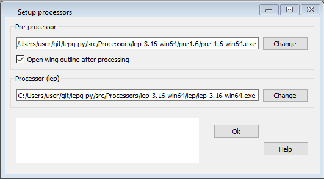

Configure the locations of both processors¶
Before you can execute pre- and processor you must configure where they are located.

With the button behind the field disaplaying path and name of the processor you can start the Setup dialog.
If you use the lepg package, you will find the processors in the subdirectory Processors.
There in the processors are separated in folders per operating system. The pre-processor is located in the folder pre…, the processor in the folder lep.
- You must choose the executable files which are:
Windows: .exe
Linux: .out
Example structure for Windows:
Processors
|-lep-3.16-win64
|-lep
|-lep-3.16-win64.exe <- Prozessor
|-man
|-png
|-pre1.6
|-pre-1.6-win64.exe <- Pre-Prozessor
The folders containing the processors will also be used a the target folders for the output files during a processor run.
If you get after a processor run the message saying the files where successful created you will find them in the folders explained above.